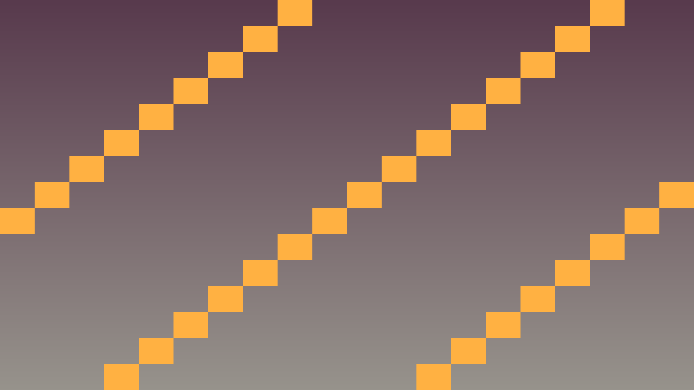

3.5 Statistikas system (sistēma) un struct (struktūra)
Stundas uzdevums: Izmantot struct (struktūra) data (datu) grupēšanai un composition (kompozīciju) class (klašu) organizēšanai.
80 min plāns: Teorija un paraugs (~10 min) · 1. uzdevums (~20 min) - izveido struct (struktūra) statistikai · 2. uzdevums (~25 min) - ieliec struct (struktūra) class (klasē) un pievieno method (metodes) · 3. uzdevums (~20 min) - pievieno pagaidu bonusus list (sarakstā) · Iesniegšana (~5 min).
Pirms sāc: atver savu dalībnieku class (klasi). Šodien sakārtosi tās field (laukus): tā vietā, lai class (klasē) būtu desmit atsevišķi skaitļi, tie visi dzīvos vienā struct (struktūra).
Teorija: struct (struktūra) un composition (kompozīcija)
struct (struktūra) ir vienkāršāka class (klase) - visi field (lauki) ir public (publiska piekļuve) pēc noklusējuma. Lietojama data (datu) grupēšanai.
using System;
public struct Stats
{
public int Energy;
public int MaxEnergy;
public int Focus;
public int Calm;
public int Speed;
public Stats(int energy = 100, int focus = 10, int calm = 5, int speed = 5)
{
Energy = energy;
MaxEnergy = energy;
Focus = focus;
Calm = calm;
Speed = speed;
}
public void Heal(int amount)
{
Energy = Math.Min(MaxEnergy, Energy + amount);
}
}
public class Participant
{
private Stats stats = new Stats(); // kompozīcija!
private string name;
public Participant(string name)
{
this.name = name;
}
public ref Stats GetStats() => ref stats; // atgriež references
}Composition (kompozīcija) (class (klase) satur citu class (klasi)) bieži ir labāka par inheritance (mantošanu) - fleksiblāka un mazāk saistīta.
Kā šo izmantot project (projektā)
Atceries: ar redzamu efektu editor (redaktorā) nepietiek. Paskaidro, kura C# class (klase) glabā state (stāvokli), kura method (metode) to maina un kā Godot node (mezgls) structure (struktūra) izmanto šo code (kodu).
Pārbaudi: katrai būtiskai turnīra lomai ir C# class (klase) vienā .cs file (failā), ar constructor (konstruktoriem), method (metodēm), signal (signāliem) vai inheritance (mantošanu).
public class OopCheckpoint
{
public string Lesson = "3.5 Statistikas sistēma un struct";
public bool UsesCSharp = true;
public bool HasScriptFile = true;
public bool HasSingleResponsibility = true;
public bool UsesGodotInspector = true;
}Praktiskie uzdevumi
1. uzdevums -
Izveido struct (struktūra) statistikai
Beigās visi dalībnieka skaitļi būs vienuviet.
- Uzraksti file (failā)
Stats.cspublic struct Stats {. - Pievieno field (laukus)
public int Energy;unpublic int MaxEnergy;. - Pievieno arī
public int Focus;,public int Calm;unpublic int Speed;. - Ievēro, ka C#
struct(struktūra) field (laukiem) jārakstapublic(publiska piekļuve), ja tos vajag lietot ārpus structure (struktūras). - Izveido object (objektu)
Stats s = new Stats();un izdrukā visus field (laukus). - Nomaini vienu field (lauku) un izdrukā vēlreiz.
- Pieraksti, ar ko
struct(struktūra) atšķiras noclass(klase).
Gatavs, kad: izdrukā redzamas visas default value (noklusējuma vērtības), un tu vari nosaukt atšķirību no class (klase).
2. uzdevums -
Ieliec struct (struktūra) class (klasē) un pievieno method (metodes)
Beigās class (klase) glabās statistiku vienā field (laukā), nevis piecos.
- Pievieno
Participantclass (klasei) privātu field (lauku)private Stats stats = new Stats();. - Izdzēs vecos atsevišķos skaitļu field (laukus).
- Pievieno
Statsstruktūrai method (metodi)public void Heal(int amount). - Ieraksti tajā
Energy = Math.Min(MaxEnergy, Energy + amount);. - Pievieno class (klasei) publisku method (metodi)
public ref Stats GetStats() => ref stats;. - Izsauc
p.GetStats().Heal(30);un izdrukā enerģiju. - Pārbaudi, ka enerģija nepārsniedz maksimumu.
Gatavs, kad: pēc lielas dziedināšanas enerģija apstājas tieši uz max_energy, nevis to pārsniedz.
3. uzdevums -
Pievieno pagaidu bonusus list (sarakstā)
Beigās dalībniekam varēs uzlikt bonusus, kas summējas.
- Izveido
public struct Buff { public string Name; public int FocusBonus; }. - Pievieno
Statsclass (klasei) field (lauku)public List<Buff> Buffs = new();. - Uzraksti method (metodi)
public int GetTotalFocus(). - Saskaiti tajā loop (ciklā) pamata
Focusplus visu bonusu summu. - Pievieno divus bonusus un izdrukā kopējo fokusu.
- Izdzēs vienu bonusu un izdrukā vēlreiz.
- Pieraksti, kāpēc kopējo value (vērtību) labāk rēķināt, nevis glabāt atsevišķā field (laukā).
Gatavs, kad: kopējais fokuss mainās, pievienojot un noņemot bonusus, un vienmēr sakrīt ar summu.
Papildu uzdevums - Pievieno bonusiem ilgumu
Ja pamatdarbs ir gatavs, liec bonusiem beigties pēc dažām kārtām.
- Pievieno
Buffstruktūrai field (lauku)public int TurnsLeft;. - Uzraksti method (metodi), kas samazina visiem bonusiem
TurnsLeftpar vienu. - Izdzēs no list (saraksta) tos, kuriem tas sasniedzis nulli.
- Izsauc šo method (metodi) trīs reizes pēc kārtas.
- Izdrukā pēc katras reizes kopējo fokusu.
Gatavs, kad: bonusi pazūd paši pēc norādītā kārtu skaita, un fokuss atgriežas sākuma value (vērtībā).
Ko sagatavo
Stundas mērķis: Tu proti izveidot struct (struktūra) data (datu) grupēšanai, ielikt to class (klasē) kā field (lauku) (composition (kompozīcija)) un rēķināt kopējo value (vērtību) no list (saraksta), nevis glabāt to atsevišķi.
GitHub repository (krātuvē) jābūt:
- File (faili)
Stats.csun atjauninātaisParticipant.cs. - Screenshot (ekrānuzņēmums) ar Output (izdrukām) panel (paneli), kurā redzams kopējais fokuss pirms un pēc bonusa noņemšanas.
- README.md: ar ko
struct(struktūra) atšķiras noclass(klase) un kāpēc kopējo fokusu labāk rēķināt.
Kā iesniedz: Veic commit (izmaiņu fiksējums) un push (nosūtīšana uz attālo krātuvi). Skolotāja norādītajā vietā ievieto tikai GitHub repository (krātuves) link (saiti); visiem prasītajiem file (failiem), README.md pierakstiem un pierādījumiem jābūt pašā repository (krātuvē).
Biežākās kļūdas
- Stats default value (noklusējuma vērtības) neuzstādās: C# struct (struktūra) bez constructor (konstruktora) dod 0 value (vērtības). Inicializē ar constructor (konstruktoru).
- List (saraksts) iteration (iterācija) kļūda: nemaini
List<Buff>tajā pašāforeach(katra elementa cikls); lietofor(skaitītāja cikls) vaiRemoveAll. - Slow buff (īslaicīgs uzlabojums) lookup: lielam bonusu skaitam lieto
Dictionary<string, Buff>vai atsevišķu index (indeksu).
Godot screenshot (ekrānuzņēmumi)

Code sample (koda piemērs) (paplašināts)
using System;
using System.Collections.Generic;
public struct Buff
{
public string Target;
public int Amount;
public float Duration;
}
public class Stats
{
public int Energy = 100;
public int MaxEnergy = 100;
public int Focus = 10;
public int Calm = 5;
public int Speed = 5;
public List<Buff> Buffs = new();
public int GetTotalFocus()
{
int total = Focus;
foreach (Buff buff in Buffs)
{
if (buff.Target == "focus") total += buff.Amount;
}
return total;
}
public void ApplyPenalty(int amount)
{
int actual = Math.Max(1, amount - Calm);
Energy = Math.Max(0, Energy - actual);
}
public void Update(float delta)
{
for (int i = 0; i < Buffs.Count; i++)
{
Buff buff = Buffs[i];
buff.Duration -= delta;
Buffs[i] = buff;
}
Buffs.RemoveAll(buff => buff.Duration <= 0);
}
}